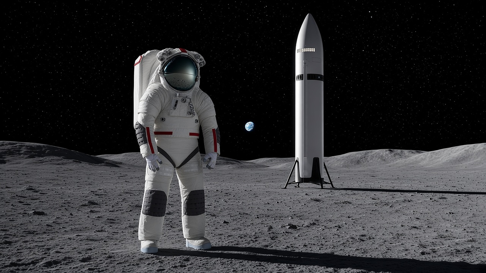

NASA's inspector general ranks Artemis landers and spacesuits as the top risk as Vulcan and Starship fly Friday
NASA's Office of Inspector General ranked establishing a human presence on the Moon as the agency's top challenge, pointing to schedule and safety risks in both human landing systems and the single-source Axiom spacesuit. The same report flags the ISS transition and commercial-services oversight, and a new study finds Artemis II's upper-stage burns disturbed the ionosphere more than any launch analyzed. ULA's Vulcan returns to flight today and Starship Flight 15 targets this afternoon pending its FAA license. Senate Armed Services Chairman Roger Wicker says he is worried Golden Dome won't be funded adequately.

Artemis: Inspector general puts landers and spacesuits at the top of NASA’s risk list
NASA’s Office of Inspector General released its 2026 Top Management and Performance Challenges report on Nov. 12 and ranked establishing a human presence on the Moon first. The biggest near-term hurdles, it says, are the human landing systems and next-generation spacesuits. Both lander providers, SpaceX and Blue Origin, have seen schedule delays, technical difficulties, integration challenges and unmitigated crew safety risks, and the HLS program calls cryogenic propellant transfer one of the hardest problems for both.
On suits, Axiom Space has been the single provider since Collins Aerospace was descoped in 2024. OIG’s analysis says delays in line with recent historical averages could push suit availability to 2031, though NASA revised requirements and added resources in August. The report lists Artemis III for June 2027, Artemis IV and V both in 2028, and notes the Artemis V lander provider hasn’t been chosen.
Sources: NASA OIG: Inspector General Identifies Five Top Challenges Facing NASA (Nov. 12); NASA OIG: 2026 Report on NASA’s Top Management and Performance Challenges (PDF) (Nov. 12)
NASA: ISS transition, commercial oversight and an Artemis II science finding
The other four challenges are the ISS-to-commercial-station transition, major program management, cybersecurity and emerging technology, and sustaining aging infrastructure and a technical workforce. OIG warns that NASA’s shift toward service-based commercial buys demands heavier oversight. Separately, researchers at Taiwan’s National Cheng Kung University report in Geophysical Research Letters that Artemis II’s upper-stage burns inside the ionosphere caused stronger disturbances than any launch they analyzed, equal to positioning errors of several meters. They couldn’t confirm actual GPS outages.
Sources: Space.com: NASA’s Artemis II moon launch tore a hole in Earth’s upper atmosphere so huge it disrupted GPS signals (Nov. 12); Spektrum der Wissenschaft: Start des NASA-Mondflugs Artemis II verursachte GPS-Störungen (Nov. 13)
SpaceX, ULA and Blue Origin: A big launch Friday
ULA’s Vulcan returns to flight today at 11:54 a.m. CT with 40 Amazon Leo satellites. It’s the first six-booster Vulcan and the first flight of a redesigned solid rocket booster nozzle, while the investigation into February’s USSF-87 nozzle anomaly stays open. Vulcan’s core stage runs on Blue Origin’s BE-4, whose modified main oxygen valve passed qualification Nov. 10. Starship Flight 15 targets 4:45 p.m. CT for the first attempt to catch both stages, but as of this morning SpaceX did not yet have its FAA launch license.
Sources: Spaceflight Now: ULA’s Vulcan rocket plans return to flight with launch of 40 Leo satellites for Amazon (Nov. 13); ULA: Vulcan Leo 1: Delivering 40 satellites to space (accessed Nov. 13); Reuters via CNA: SpaceX to attempt first Starship spacecraft recovery on land in 15th flight (Nov. 13); SpaceX: Starship Flight 15 (accessed Nov. 13); Blue Origin: GS1-3 Hotfire Updates (Nov. 10)
Golden Dome: The funding fight moves to the lame duck
Outgoing Senate Armed Services Chairman Roger Wicker told The Washington Times he worries Golden Dome won’t be “funded adequately,” citing a roughly $350 billion FY2027 gap that much of the Pentagon’s space work depends on. Asked if Congress may fail to close it, he said, “Yes, I am.” Deputy Defense Secretary Steve Feinberg is due on the Hill early next week. Meanwhile, SDA told Breaking Defense its $9.9 million SpaceX laser-terminal study is only a first step toward linking its Tracking Layer to the Space Data Network Backbone.
Sources: Washington Times: Key Republicans warn Golden Dome missile shield funding could be under threat (Nov. 12); Breaking Defense: SDA explores integration of SpaceX laser communication terminals with missile tracking sats (Nov. 12)
Sources
-
NASA OIG
Inspector General Identifies Five Top Challenges Facing NASA
-
NASA OIG
2026 Report on NASA's Top Management and Performance Challenges (PDF)
-
Space.com
NASA's Artemis II moon launch tore a hole in Earth's upper atmosphere so huge it disrupted GPS signals
-
Spektrum der Wissenschaft
Start des NASA-Mondflugs Artemis II verursachte GPS-Störungen
-
Spaceflight Now
ULA's Vulcan rocket plans return to flight with launch of 40 Leo satellites for Amazon
-
ULA
Vulcan Leo 1: Delivering 40 satellites to space
-
Reuters via CNA
SpaceX to attempt first Starship spacecraft recovery on land in 15th flight
-
SpaceX
Starship Flight 15
-
Blue Origin
GS1-3 Hotfire Updates
-
Washington Times
Key Republicans warn Golden Dome missile shield funding could be under threat
-
Breaking Defense
SDA explores integration of SpaceX laser communication terminals with missile tracking sats